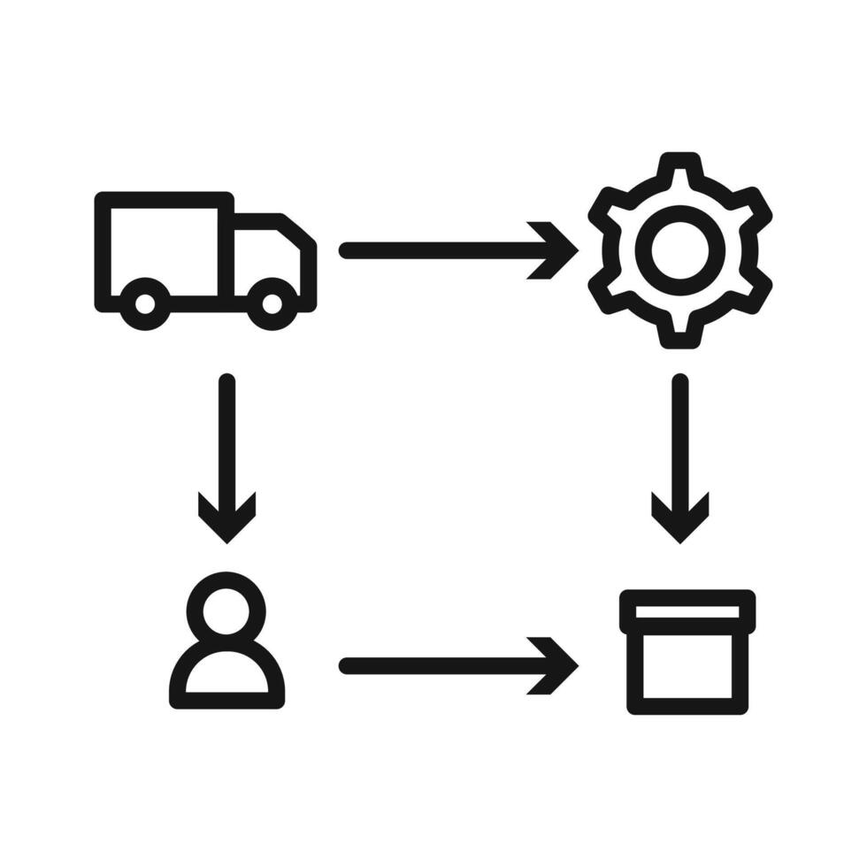

LUCAS TAN / MECHANICAL ENGINEERING01 — 05

SELECTED ENGINEERING PROJECTS / 2026
Supply Chain
Challenge
A graph-based framework to analyse semiconductor logistics and optimise dynamic supply chain routes.
SCROLL TO EXPLORE ↓
LUCAS TAN PENG LIANG / MECHANICAL ENGINEERING
LUCASTAN
陈炳良
THE PERSON BEHIND THE WORKCONTINUE SCROLLING ↓
ABOUT
IMAGINEBUILDTELL
I like to IMAGINE beyond the obvious solution, exploring how engineering, automation and AI can work together in new ways.
I BUILD those ideas into real outcomes through design, simulation, programming and hands-on prototyping.
And I TELL the story behind the work clearly, turning technical ideas into something people can understand and connect with.